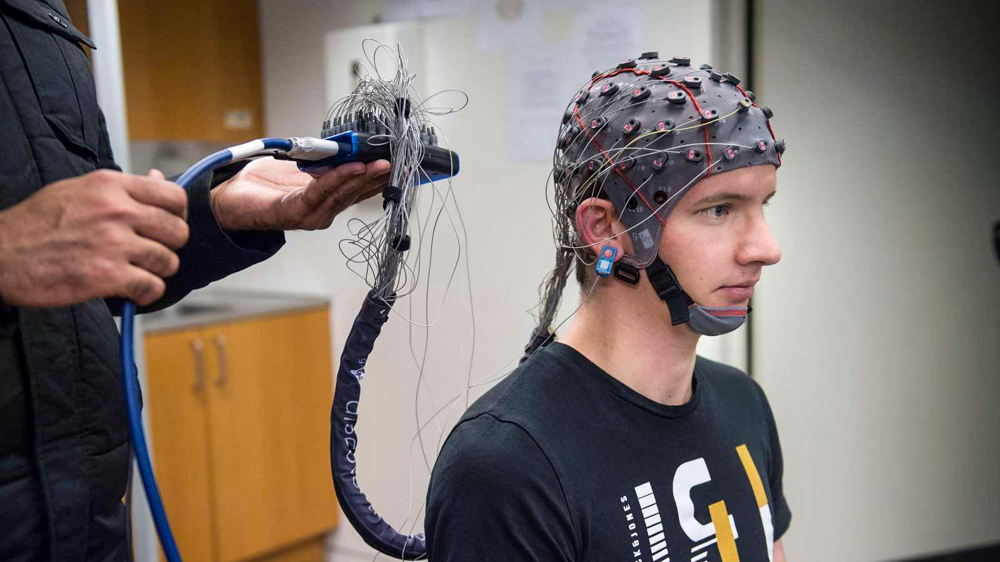
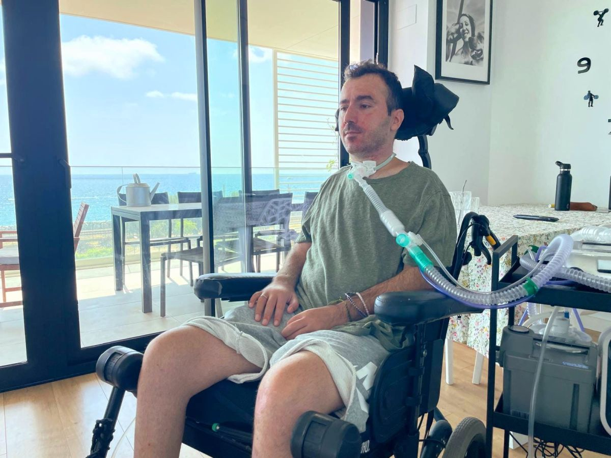

NeuroSynapsis desarrolla soluciones basadas en inteligencia artificial, análisis de neurodatos y principios de neurociencia para que personas e instituciones puedan medir, entrenar y ampliar sus capacidades cognitivas, con rigor científico y enfoque en accesibilidad.
Quiénes somos
Somos una empresa de neuroinformática aplicada dedicada al desarrollo de herramientas tecnológicas basadas en inteligencia artificial, análisis de neurodatos y neurociencia para potenciar las capacidades cognitivas humanas.
Pertenecemos al sector cuaternario de la economía: construimos soluciones de alto contenido científico, orientadas a investigación aplicada, innovación y servicios digitales avanzados.
Potenciar las capacidades cognitivas de personas y organizaciones mediante el uso de inteligencia artificial y neurociencia aplicada, con herramientas accesibles y basadas en datos.
Liderar la innovación en neuroinformática en Bolivia y Latinoamérica, impulsando tecnología accesible, científica y responsable.
Valores alineados con el modelo de negocio y el perfil de proyecto de NeuroSynapsis.
Ecosistema tecnológico
NeuroSynapsis se organiza en módulos que pueden funcionar de forma independiente o integrarse en una plataforma central: BCI accesible, IA cognitiva, monitoreo de signos vitales, visión por computadora médica y un dashboard web para profesionales.

Interfaces cerebro–computadora de bajo costo para controlar funciones digitales básicas: clic, desplazamiento, selección y comandos simples.
Especialmente relevante para personas con movilidad reducida y contextos de rehabilitación.
Módulos de neuroevaluación y entrenamiento cognitivo basados en tareas interactivas, neurodatos y biomarcadores de atención, fatiga y carga cognitiva.
Para estudiantes, docentes, adultos mayores y profesionales interesados en optimizar su rendimiento.
Análisis de series de tiempo fisiológicas y visión por computadora aplicada a imagenología médica para apoyar triage y monitoreo, sin reemplazar profesionales.
Pensado para médicos, fisioterapeutas, centros de rehabilitación y proyectos de investigación.
Segmentos de usuario
Trabajamos con personas con movilidad reducida, pacientes y adultos mayores, estudiantes y docentes, centros de salud, empresas y laboratorios que buscan soluciones científicas y accesibles.

Reducimos barreras digitales con BCI accesible y control híbrido (señales cerebrales + biométricas), orientado a independencia en tareas cotidianas.
Herramientas para seguimiento cognitivo y fisiológico ligero, facilitando detección temprana de cambios y seguimiento desde centros de salud o el hogar.
Plataformas y dashboards con métricas cognitivo-fisiológicas para educación, salud, bienestar laboral e investigación aplicada, con enfoque en BI e IA.
Podemos comenzar con un piloto de BCI accesible, un módulo de IA cognitiva o un prototipo de monitoreo inteligente. Diseñamos pruebas de humo, pruebas de concepto y validaciones controladas con tus usuarios.
Respondemos en un máximo de 48 horas hábiles.